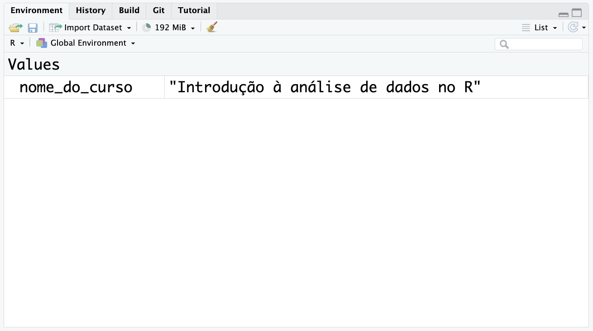
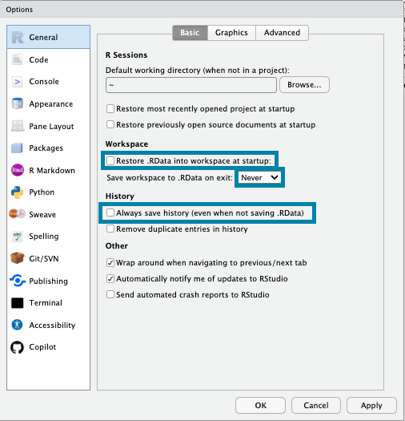

1 + 1 # Soma[1] 21 - 1 # Subtração[1] 02 * 3 # Multiplicação[1] 610 / 2 # Divisão[1] 52 ^ 3 # Potenciação[1] 8Existem muitos conceitos básicos que são fundamentais para quem está começando a programar em R.
Nesta aula, vamos abordar algun conceitos considerados mais importantes para as próximas aulas.
O R permite realizar operações matemáticas básicas, como soma, subtração, multiplicação, divisão, potenciação, entre outras.
1 + 1 # Soma[1] 21 - 1 # Subtração[1] 02 * 3 # Multiplicação[1] 610 / 2 # Divisão[1] 52 ^ 3 # Potenciação[1] 8A ordem matemática das operações também vale no R. Por exemplo, a expressão 2 + 3 * 4 será calculada como 2 + (3 * 4):
2 + 3 * 4[1] 14No R, um objeto é uma estrutura de dados que armazena valores: podemos armazenar um valor único, um conjunto de valores, uma base de dados, entre outros.
É muito útil armazenar valores em objetos, pois podemos reutilizá-los em diferentes partes do código, sem precisar digitar o valor novamente.
Existem alguns objetos já criados no R, como por exemplo o objeto letters, que armazena as letras do alfabeto:
pi[1] 3.141593letters [1] "a" "b" "c" "d" "e" "f" "g" "h" "i" "j" "k" "l" "m" "n" "o" "p" "q" "r" "s"
[20] "t" "u" "v" "w" "x" "y" "z"O R é case-sensitive, ou seja, ele diferencia letras maiúsculas de minúsculas. Portanto, nome é diferente de Nome.
Por exemplo, o objeto pi armazena o valor de π (com um número limitado de casas decimais). O nome do objeto é escrito em minúsculas:
pi[1] 3.141593Se tentarmos acessar o objeto com o nome em maiúsculas, o R irá retornar um erro, pois esse objeto não existe:
PiError: object 'Pi' not foundPara criar um objeto, precisamos definir um nome, e atribuir um valor à este nome. Para isso, usamos o operador de atribuição: <-. Um atalho para esse operador é o Ctrl + - no Windows, ou Option + - no Mac .
No exemplo a seguir, criamos um objeto chamado nome_do_curso e atribuímos a ele o texto "Introdução à análise de dados no R":
nome_do_curso <- "Introdução à análise de dados no R"Podemos acessar o valor armazenado em um objeto digitando o nome do objeto:
nome_do_curso[1] "Introdução à análise de dados no R"O objeto apenas será alterado se utilizarmos o operador de atribuição novamente. Por exemplo, a função tolower() transforma todas as letras de um texto em minúsculas:
tolower(nome_do_curso)[1] "introdução à análise de dados no r"Mas como não utilizamos a atribuição, o objeto nome_do_curso não foi alterado:
nome_do_curso[1] "Introdução à análise de dados no R"Para alterar o objeto, precisamos atribuir o resultado da função tolower() ao objeto nome_do_curso:
nome_do_curso <- tolower(nome_do_curso)Agora, o objeto nome_do_curso foi alterado:
nome_do_curso[1] "introdução à análise de dados no r"Portanto, cuidado: ao criar um objeto com nome igual à outro objeto existente, o objeto anterior será substituído pelo novo objeto.
Para consultar os objetos criados, podemos usar a função ls() (list objects), que lista todos os objetos criados no Painel Environment:
ls()[1] "nome_do_curso"Outra forma é consultar o Painel Environment no RStudio, que exibe todos os objetos criados, e permite acessar o valor de cada objeto:

Caso queira remover um objeto, podemos usar a função rm() (remove objects). Por exemplo, para remover o objeto nome_do_curso:
rm(nome_do_curso)Podemos consultar novamente os objetos existentes e verificar se o objeto foi removido:
ls()[1] "nome_do_curso"Caso queira remover todos os objetos carregados, podemos usar a função rm(list = ls()).
rm(list = ls())A configuração padrão do RStudio define que, quando fechamos o RStudio, o R salva todos os objetos criados em um arquivo chamado .RData1. Na próxima vez que o RStudio for aberto, os objetos serão carregados automaticamente.
Porém isso não é uma boa prática. O importante é desenvolver um script que tenha todos os passos necessários para reproduzir os resultados, e não depender de objetos salvos em um arquivo como o .RData.
Para desabilitar essas configurações, no menu Tools > Global Options > General:
Desmarcar a opção Restore .RData into workspace at startup;
Em Save workspace to .RData on exit, selecionar Never.
Desmarcar a opção Always save history (even when not saving .RData).

Após desativar essa opção, o RStudio não carregará os objetos salvos no .RData na próxima vez que for aberto. Dessa forma, se quisermos apagar todos os objetos, podemos reiniciar a sessão do R (clicando em Session > Restart R no menu superior do RStudio).
Existem regras e boas práticas para nomear objetos no R. As regras são obrigatórias: se não seguirmos, o código irá gerar um erro. As boas práticas são recomendações, com o objetivo de evitar erros futuros, e facilitar a leitura do código.
Recomendamos seguir essas recomendações não apenas para o nome dos objetos, mas também para nome de pastas e arquivos, nome de colunas, entre outros.
1objeto não é um nome válido.1objeto <- "exemplo"Error in parse(text = input): <text>:1:2: unexpected symbol
1: 1objeto
^_). Ex: _objeto não é um nome válido._objeto <- "exemplo"Error in parse(text = input): <text>:1:2: unexpected symbol
1: _objeto
^-), pois o R interpreta o traço como um operador de subtração. Ex: meu-objeto não é um nome válido.objeto-1 <- "exemplo"Error: object 'objeto' not foundO nome não deve começar com um ponto. Isso não gerará um erro, porém é contra-indicado pois essa sintaxe é utilizada para nomear objetos ocultos no R (portanto, não aparecerá no Painel Environment), e isso pode dificultar o acesso posteriormente. Ex: .objeto não deve ser usado.
Não utilizar acentos, cedilhas, ou outros caracteres especiais. Isso pode gerar problemas de compatibilidade com outros sistemas (chamamos de encoding). Ex: aviões não é um nome recomendado.
Não utilizar espaços, pois dificulta o acesso ao objeto posteriormente: precisaremos utilizar a crase em volta do nome do objeto para acessá-lo.
Existem diferentes estilos para nomear objetos2, como snake_case, onde todas as letras devem ser minúsculas, e as palavras separadas por underline. O importante é escolher um estilo e manter a consistência.
Existem diferentes tipos de dados que podemos armazenar em objetos no R, como números, textos, lógicos, fatores, datas, entre outros.
É muito importante identificar o tipo de dado que estamos trabalhando, pois cada tipo de dado permite usar funções específicas.
A função class() permite verificar a classe de um objeto. Por exemplo, podemos verificar a classe do objeto pi:
class(pi)[1] "numeric"Os objetos numéricos no R podem ser de dois tipos:
inteiros (integer): armazena apenas números inteiros, ou seja, sem casas decimais. Ex: 1, 2, 3, 4, 5.
numéricos (numeric ou double): armazena números que podem conter casas decimais. Ex: 1, 2, 3.14, 4, 5.
Na maioria dos casos, utilizamos o tipo numeric para armazenar números, pois ele é mais flexível.
Por exemplo, para criar um objeto que armazena o número 42:
exemplo_numero <- 42
class(exemplo_numero)[1] "numeric"Para criar um objeto que armazena um valor usado para converter dólar em reais (R$), podemos usar o tipo numeric:
conversao_dolar <- 5.45
class(conversao_dolar)[1] "numeric"O tipo lógico (logical) armazena valores booleanos: TRUE (verdadeiro) ou FALSE (falso). Os valores binários podem ser convertidos para números, onde TRUE será 1, e FALSE será 0.
Por exemplo, para criar objetos com os valores lógicos TRUE e FALSE:
exemplo_logico_verdadeiro <- TRUE
class(exemplo_logico_verdadeiro)[1] "logical"exemplo_logico_falso <- FALSE
class(exemplo_logico_falso)[1] "logical"O tipo texto (character, ou também conhecido como string) armazena textos. Para criar um objeto com um texto, precisamos colocar o texto entre aspas:
nome_do_curso <- "Introdução à análise de dados no R"
class(nome_do_curso)[1] "character"O tipo fator (factor) armazena variáveis categóricas, ou seja, variáveis que possuem um número limitado de categorias. Os valores possíveis de categoria são chamados de levels. Os fatores podem ser ordenados ou não ordenados.
Os fatores são muito úteis para a visualização de dados e para alguns modelos usados em análise de dados.
Neste momento, não vamos aprofundar no conceito de fatores: falaremos mais sobre eles nas próximas aulas.
O tipo data (Date) armazena datas no formato aaaa-mm-dd (ano-mês-dia).
Para criar um objeto com uma data, podemos usar a função as.Date(), que converte um texto para o tipo Date. Por exemplo, para criar um objeto com a data de início do curso:
data_inicio_curso <- as.Date("2024-10-01")
class(data_inicio_curso)[1] "Date"A função Sys.Date() retorna a data atual do sistema:
data_sistema <- Sys.Date()
class(data_sistema)[1] "Date"Podemos fazer operações com datas:
data_inicio_curso - data_sistema
data_sistema + 1
as.Date("2024-02-29") + 1Time difference of -12 days
[1] "2024-10-14"
[1] "2024-03-01"Existem várias funções que podemos usar para transformar variáveis de um tipo para outro. Essas funções tem começam com as. seguido pelo tipo de dado que queremos que seja convertido. Por exemplo:
as.character(): converte valores para textoas.numeric(): converte valores para númeroas.logical(): converte valores para lógicoas.factor(): converte valores para fatoras.Date(): converte valores para dataas.character(2024)
as.numeric(TRUE)
as.Date("2024-10-01")
as.logical("TRUE")[1] "2024"
[1] 1
[1] "2024-10-01"
[1] TRUEPorém, nem toda conversão fará sentido. Por exemplo, podemos converter um número para texto, porém nem toda conversão de texto para número funcionará como esperado:
as.numeric("2024")
as.numeric("Curso de R")[1] 2024
[1] NAQuando a conversão não é possível, o R irá retornar um valor NA (Not Available), que indica um valor faltante. Falaremos mais sobre valores faltantes na próxima seção.
NA)Valores faltantes, conhecidos também como missing values, são valores que não estão disponíveis, ou que não foram informados. No R, esses valores são representados pelo valor NA (Not Available).
Podemos testar se um valor é NA usando a função is.na(): essa função retornará TRUE se o valor for NA, e FALSE caso contrário.
is.na(NA)[1] TRUEAlgo importante é que o R não consegue fazer operações matemáticas com valores NA. Por exemplo, se tentarmos realizar qualquer operação matemática com NA, o resultado será NA:
NA + 1[1] NANA + NA[1] NANA * 2[1] NAÉ importante identificar os valores NA em nossos dados, pois eles podem afetar o resultado de nossas análises. Por exemplo, se tentarmos calcular a média de um conjunto com valores NA, o resultado será NA:
numeros_com_na <- c(1, 2, NA, 4, 5)
mean(numeros_com_na)[1] NAEm aulas futuras falaremos sobre como identificar os NA em nossos dados, e algumas estratégias para lidar com eles. Neste momento, podemos utilizar o argumento na.rm = TRUE para que os NA sejam removidos antes de executar a função que calcula a média:
mean(numeros_com_na, na.rm = TRUE)[1] 3Existem diferentes tipos de objetos no R, e cada tipo de objeto possui diferentes propriedades. Os principais tipos de objetos que utilizaremos ao longo do curso são: vetores, data.frames e listas.
Vetores armazenam um conjunto de valores de uma dimensão. Eles podem ser criados com a função c(), que significa combine (combinar). Por exemplo, para criar um vetor com os números de 1 a 5:
vetor_de_numeros <- c(1, 2, 3, 4, 5)Os vetores podem armazenar diferentes tipos de dados, como números, textos, fatores, entre outros. Porém cada vetor pode armazenar apenas um tipo de dado. Por exemplo, se tentarmos criar um vetor que armazena números e textos, o R irá converter todos os valores para texto. Essa propriedade é chamada de coerção.
vetor_misto <- c(1, 2, "três", 4, 5)
class(vetor_misto)[1] "character"vetor_misto[1] "1" "2" "três" "4" "5" No geral, podemos converter dados sem perder informação seguindo essa ordem: Lógico > Inteiro > Numérico > Texto.
Os data.frames são conjuntos de valores com duas dimensões: linhas e colunas. Porém, diferente do que vimos para as matrizes, os data.frames podem armazenar diferentes tipos de dados em cada coluna.
Esse é o principal tipo de objeto que utilizaremos nesse curso, pois ele é muito útil para armazenar dados tabulares.
Existem alguns data.frames já criados no R, como o airquality, que armazena dados sobre a qualidade do ar na cidade de Nova York, em 1973. Essas são as primeiras linhas do data.frame airquality:
head(airquality) Ozone Solar.R Wind Temp Month Day
1 41 190 7.4 67 5 1
2 36 118 8.0 72 5 2
3 12 149 12.6 74 5 3
4 18 313 11.5 62 5 4
5 NA NA 14.3 56 5 5
6 28 NA 14.9 66 5 6Para criar um data.frame, podemos usar a função data.frame(). Entretanto, o mais comum é importar dados de arquivos, como CSV, Excel, ou de bancos de dados. Falaremos sobre como importar dados na próxima aula.
As listas são os objetos mais flexíveis do R: podemos armazenar diferentes tipos de objetos dentro de uma mesma lista. Por exemplo, podemos armazenar um vetor, uma matriz, um data.frame, e até mesmo outra lista dentro de uma lista.
Podemos criar uma lista com a função list(). Os elementos da lista podem ser nomeados ou não. Vamos criar uma lista nomeada, com três elementos: o número π, o data.frame airquality, e o vetor letters:
lista_exemplo <- list(numero_pi = pi,
df_qualidade_do_ar = airquality,
letras = letters)
class(lista_exemplo)[1] "list"A função str() (structure) exibe a estrutura da lista, mostrando os elementos e seus tipos:
str(lista_exemplo)List of 3
$ numero_pi : num 3.14
$ df_qualidade_do_ar:'data.frame': 153 obs. of 6 variables:
..$ Ozone : int [1:153] 41 36 12 18 NA 28 23 19 8 NA ...
..$ Solar.R: int [1:153] 190 118 149 313 NA NA 299 99 19 194 ...
..$ Wind : num [1:153] 7.4 8 12.6 11.5 14.3 14.9 8.6 13.8 20.1 8.6 ...
..$ Temp : int [1:153] 67 72 74 62 56 66 65 59 61 69 ...
..$ Month : int [1:153] 5 5 5 5 5 5 5 5 5 5 ...
..$ Day : int [1:153] 1 2 3 4 5 6 7 8 9 10 ...
$ letras : chr [1:26] "a" "b" "c" "d" ...Crie um objeto chamado meu_nome e armazene seu nome nele. Depois, use a função toupper() para converter seu nome para letras maiúsculas e salve o resultado em um novo objeto chamado nome_maiusculo. Verifique se os dois objetos foram criados corretamente, consultando o painel Environment.
Observe os nomes a seguir, e identifique se estão adequados para nomear objetos e colunas no R. Para os nomes que não estão adequados, explique o motivo:
dados_altura1_dadosmedia-alturamedia_alturaMédia alturaTente adivinhar a classe dos objetos a seguir, e depois confira no R usando a função class():
pi
letters
dplyr::starwars
dplyr::starwars$mass
dplyr::starwars$species
dplyr::starwars$films